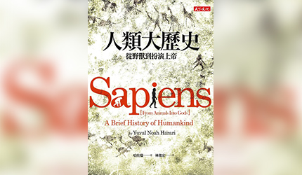

發￭燒￭資￭訊
▋好書導讀
《最貧窮的哈佛女孩》
作者出生於紐約市布朗克斯區。雖然她的父母吸毒成癮，幼小的作者卻很滿意、喜歡當時的生活。進入學校後，因為她一身髒衣服與長滿頭蝨的亂髮，總是被同學嘲笑，導致她不斷曠課，最後被送入少女中途之家。15 歲是作者最受挫的時候，早已不穩的家庭破碎，只好流浪街頭。而母親的過世，激勵了她要好好改變自己的念頭，於是她重返高中上課，即使無家可歸的她，還是努力把四年的課程用兩年完成，最後考進哈佛。我走到舞台上，站在明亮的燈光下，巨大的展覽廳裡坐著滿滿的企業人士，我看著他們...

《人類大歷史》
哈拉瑞是以色列歷史學家、耶路撒冷希伯來大學教授，以其深刻且通俗易懂的歷史觀點聞名全球。他以宏觀的視角切入，挑戰傳統史觀，解釋人類文明如何從原始智人演化到今日的科技社會。本書作為「人類三部曲」的首部曲，以三個關鍵性的「大革命」為主軸：認知革命、農業革命與科學革命，引導讀者縱覽智人七萬年的歷史，探討我們如何成為地球主宰，並即將跨入由「智慧設計」主導的全新紀元。約七萬年前，智人在東非演化而成。人類歷史的起點並非生理變革，而是發生在七萬年前的「認知革命」...